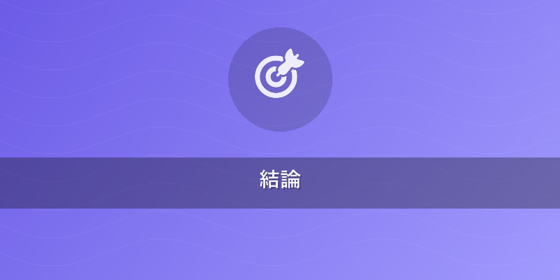
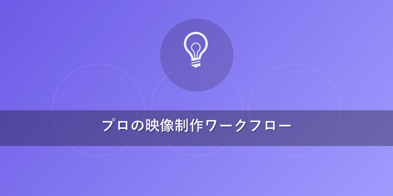
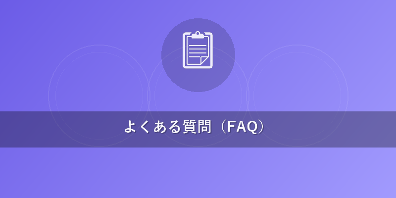

2026年最新！Runway 使い方徹底解説 - 初心者からプロまで
Runway AI動画クリエイターズガイドへようこそ。本記事では、AI動画生成の最前線を走るRunwayの最新モデル「Gen-4」に焦点を当て、その基本的な使い方から、高度なモーション制御、カメラワーク設定、そしてプロの映像制作ワークフローへの組み込み方まで、網羅的に解説します。
この記事でわかること
- Runway Gen-4の最新機能（テキストtoビデオ、モーション制御、カメラワーク）を実践的に習得し、高品質なAI動画を生成できるようになります。
- 初心者でも迷わないRunwayの始め方から、効果的なプロンプト作成術まで、具体的な操作手順と設定パラメータを理解できます。
- Runwayを既存の映像制作ワークフロー（Premiere Pro, DaVinci Resolveなど）に統合し、効率的な映像制作を実現するヒントを得られます。

結論
2026年現在、Runway Gen-4はAI動画生成ツールの最有力候補の一つであり、特にその高精細な映像品質、直感的なモーション制御、そして柔軟なカメラワーク設定は、初心者からプロのクリエイターまで、あらゆるレベルのユーザーに新たな表現の可能性をもたらします。本ガイドを通して、Gen-4のポテンシャルを最大限に引き出し、あなたのクリエイティブなアイデアを現実の映像として形にしましょう。
本題
1. Runway Gen-4の基本と始め方：AI動画生成の第一歩
Runway Gen-4は、前世代のモデルから飛躍的に進化したAI動画生成モデルです。よりリアルで詳細な映像、一貫性の高いキャラクターやオブジェクト、そして複雑なカメラムーブメントまで、驚くほどの精度で生成可能になりました。まずは、Runwayの基本的な使い方とアカウント作成から始めましょう。
アカウント登録とプラン選択
- Runwayの公式サイト（runwayml.com）にアクセスします。
- 「Get Started Free」または「Sign Up」をクリックし、Googleアカウント、Apple ID、またはメールアドレスで登録します。無料プランでも基本的な機能は試せますが、クレジット消費や機能制限があります。
- 本格的な制作には、Standard、Pro、Unlimited、Enterpriseといった有料プランを検討しましょう。特に商用利用を前提とする場合、クレジット消費量や生成時間の延長、高解像度エクスポート、著作権の扱いが明確に定められている有料プランが推奨されます。Gen-4の商用利用権は有料プランに付帯しており、生成されたコンテンツの著作権は原則としてユーザーに帰属します。 ただし、AI学習データに起因する類似性など、法的な解釈は流動的であるため、常に最新の利用規約を確認し、必要に応じて専門家の意見を求めることが重要です。
ワークスペースの概要
ログイン後、Runwayのダッシュボードが表示されます。主要な機能は以下の通りです。 * Gen-1（Video to Video）: 既存の動画をスタイル変換・編集 * Gen-2（Text to Video / Image to Video）: テキストや画像から動画生成 * Gen-3 / Gen-4: 最新の高精度AI動画生成モデル。主に「Text to Video」や「Image to Video」のさらに進化した機能を提供します。 * Image Editor: AI画像生成や編集機能
今回はGen-4の「Text to Video」を中心に解説します。ダッシュボードで「Gen-4」を選択し、「Start with Text」または「Start with Image」を選んでください。
2. テキストtoビデオ実践：プロンプト設計とGen-4の真価
Runway Gen-4で高品質な動画を生成するためには、効果的なプロンプト（指示文）の設計が不可欠です。プロンプトはAIへの「言葉による指示書」であり、その精度が動画のクオリティを大きく左右します。
プロンプト作成の基本原則
- 具体的かつ詳細に: 抽象的な表現は避け、具体的な描写を心がけます。
- 五感を意識する: 色、光、雰囲気、感情、音などを想像させる言葉を使います。
- キーワードの羅列ではなく文章で: 自然な文章構造の方がAIが意図を理解しやすい場合があります。
- 英語での記述を推奨: AIモデルの学習は英語が主流のため、より正確な結果を得やすいです。
プロンプトの構成要素
効果的なプロンプトは、以下の要素を組み合わせることで構成されます。
* Subject (被写体): 何が映っているか（例: A majestic lion）
* Action (動作): 被写体が何をしているか（例: running through a vast savanna）
* Setting (場所/背景): どこで起こっているか（例: at sunset）
* Style (スタイル): 映像の雰囲気や画風（例: cinematic, documentary style, realistic, golden hour lighting）
* Camera (カメラワーク): カメラのアングルや動き（例: dolly shot, wide shot）
* Resolution/Aspect Ratio (解像度/アスペクト比): 1920x1080, 16:9など
プロンプト例とGen-4の効果
プロンプト例1 (基本):
A futuristic city skyline at night, glowing neon lights, flying cars, busy streets, cyberpunk aesthetic.
Runway Gen-4の利点: Gen-4では、各要素がより細部まで忠実に再現され、ネオンの光の反射、車の動きの滑らかさ、サイバーパンクな雰囲気の一貫性が格段に向上します。従来のモデルでは破綻しがちだった細かいオブジェクトも、Gen-4ではリアリティを保ちます。
プロンプト例2 (モーション制御とカメラワークを意識):
A lone astronaut walks on the surface of a red alien planet, dust swirling around his feet. The camera slowly zooms out, revealing a vast, desolate landscape under a twin sun. Cinematic, epic scale, 8K, shot on Arri Alexa.
Runway Gen-4の利点: このプロンプトでは、宇宙飛行士の足元の砂塵のリアルな動き、カメラのズームアウトによる壮大なスケール感、そしてツインサンによる独特のライティングが、Gen-4の高度なモーション制御とカメラワーク設定によって非常に自然に再現されます。特に「camera slowly zooms out」のような指示は、Gen-4のカメラ制御機能と連動し、滑らかなズームアウトを実現します。
3. 高度なモーション制御とカメラワーク設定
Gen-4の最大の進化の一つは、動画内の動きとカメラワークをより細かく制御できる点です。これにより、単なる生成動画ではなく、演出意図を持った映像を作り出すことが可能になります。
モーションブラシ (Motion Brush) の活用
Gen-4では、生成された動画の一部に特定の動きを指示する「モーションブラシ」機能が強化されています。例えば、雲だけをゆっくり動かす、特定のキャラクターの髪だけを風になびかせる、といったことが可能です。
操作手順: 1. 動画生成後、エディット画面で「Motion Brush」を選択します。 2. ブラシツールで動かしたいオブジェクトや領域をペイントします。 3. X軸（左右）、Y軸（上下）、Z軸（奥行き）の各方向への動きの強度をスライダーで調整します。さらに、回転やスケール（拡大縮小）も制御可能です。 4. プレビューで確認しながら微調整し、納得のいく動きになったら適用します。
カメラ制御 (Camera Control) の詳細設定
Gen-4のカメラ制御は、まるで実際のカメラを操作しているかのように、パン、ティルト、ズーム、ドリー、オービットといった動きをプロンプトまたはGUIで設定できます。
設定パラメータ: * Pan (左右): 水平方向のカメラの動き。 * Tilt (上下): 垂直方向のカメラの動き。 * Zoom (ズームイン/アウト): 被写体への接近・後退。 * Dolly (前後): カメラ自体が前後移動する動き。画角は変わらず遠近感が変化します。 * Orbit (旋回): 被写体の周りをカメラが旋回する動き。 * Roll (傾き): カメラの軸が回転する動き。
プロンプトでの指定例:
A sleek, silver spaceship landing on a foggy alien planet. The camera pans from left to right, slowly following the ship as it descends, then tilts down to show the landing gear deploying. Wide shot, dramatic lighting.
GUI上では、これらの各項目に数値を入力したり、スライダーで調整したりすることで、より直感的にカメラワークを設計できます。特に、被写体の動きとカメラの動きを同期させることで、没入感のある映像を作り出すことが可能です。
Runwayは常に進化を続けており、Gen-4の次に登場するGen-5では、さらに高度な物理ベースのシミュレーションや感情表現の細分化が進むと予想されています。{{internal_link:Runwayの最新機能と将来展望}}にも注目しましょう。

プロの映像制作ワークフロー
Runwayで生成したAI動画は、そのままSNSに投稿するだけでなく、プロの映像制作ワークフローに組み込むことで、より高度な作品に昇華させることができます。主要なNLE（ノンリニア編集）ソフトウェアとの連携方法を見ていきましょう。
1. エクスポート設定
Runwayから動画をエクスポートする際は、編集ソフトでの作業効率を考慮した設定を選びます。 * 解像度: 4K（3840x2160）またはフルHD（1920x1080）など、プロジェクトの要件に合わせて選択します。 * フレームレート: 24fps（映画的）、30fps（テレビ標準）、60fps（滑らか）など、目的に応じて設定します。 * フォーマット: 高画質を維持しつつ編集に適したフォーマットとして、ProRes（Mac向け）、DNxHR（Windows向け）が推奨されます。これらのフォーマットはファイルサイズが大きくなりますが、編集時の負荷が少なく、画質劣化を最小限に抑えられます。ウェブ公開用であればMP4（H.264/H.265）でも十分です。
2. Adobe Premiere Pro / DaVinci Resolve との連携
Runwayで生成した動画は、これらの編集ソフトのタイムラインにドラッグ＆ドロップで簡単に読み込めます。AI生成素材は、以下のような場面で活用できます。 * 背景素材: 実写映像のグリーンバック合成や、VFXの背景として。 * Bロール/インサートカット: メインの映像に織り交ぜることで、物語に深みを与えたり、情報量を増やしたりします。 * プレビズ（プリビジュアライゼーション）: 企画段階での映像イメージの共有や、カメラワークの検討に。 * 特殊効果: 既存の映像では撮影が難しいSFXやVFX要素をAIで生成し、合成します。
具体的なワークフロー例: 1. Runwayで必要なAI動画素材を生成・エクスポートします。 2. Premiere ProまたはDaVinci Resolveで、実写フッテージやグラフィック素材を編集します。 3. Runwayで生成したAI動画をタイムラインに配置し、必要に応じてカラーグレーディング、ノイズ除去、シャープネス調整、エフェクト追加を行います。 4. AI動画の尺が足りない場合は、Runwayの「Extend Scene」機能で延長したり、複数の生成動画を繋ぎ合わせたりします。 5. 音声デザイン、BGM、ナレーションを追加し、最終的なミックスダウンを行います。
3. Adobe After Effects との連携
After Effectsは、Runwayで生成したAI動画にさらなる視覚効果を加える際に強力なツールとなります。 * コンポジット（合成）: AI生成された要素と実写を違和感なく合成します。 * モーショングラフィックス: AI動画のテクスチャや動きを利用して、アニメーションやグラフィックを重ねます。 * 高度なVFX: AI動画をベースに、パーティクルエフェクト、3Dトラッキング、ルック開発などを適用します。
RunwayのAI生成能力は、クリエイターの想像力を刺激し、従来の制作手法では不可能だった表現を可能にします。{{internal_link:AI動画制作の著作権と商用利用ガイドライン}}も参照し、安心して制作を進めましょう。
他のAI動画ツールとの比較
Runwayは強力なツールですが、AI動画生成の世界には他にも多くの選択肢が存在します。ここでは、主要なAI動画生成ツールとRunway Gen-4を客観的に比較します。
| ツール名 | 特徴とRunway Gen-4との違い |
|---|---|
| Runway Gen-4 | - 強み: テキストtoビデオ、Image to Videoの品質が非常に高い。モーションブラシやカメラ制御など、細かい演出が可能な点が大きなアドバンテージ。ユーザーインターフェースも直感的で扱いやすい。多様なスタイルに対応。商用利用のプランも充実。 - 弱み: 高度な生成にはクレジット消費が大きく、ランニングコストがかかる場合がある。 |
| Google Veo | - 強み: Googleの強力なAI基盤を背景に、長尺動画の生成、安定したキャラクターの一貫性、高精細な映像が特徴。Google検索やYouTubeとの連携が将来的に期待される。 - 弱み: 一般公開が限定的（2026年時点でも招待制など）。Runwayのような細かなモーション制御やVFX特化機能は現在のところ不明。 |
| Kling (快影) | - 強み: 中国発のAI動画生成ツールで、人物の動きの再現性や表情の自然さに強みを持つ。特にアジア系コンテンツや特定のスタイルに強みを発揮する傾向がある。高速な生成速度も魅力。 - 弱み: インターフェースが中国語中心の場合があり、日本語・英語ユーザーには敷居が高い可能性。Runwayほどの汎用性や細かいカメラ制御はまだ発展途上。 |
| Pika Labs | - 強み: Discordをベースにしたコミュニティ主導型で、初心者でも気軽に始められる。テキストtoビデオ、Image to Video、スタイル変換など一通りの機能を提供。無料枠が比較的充実している。頻繁なアップデート。 - 弱み: 生成される動画の品質や一貫性はRunway Gen-4に一歩譲る場面が多い。商用利用はプランによる制限がある。 |
| 旧Sora (OpenAI) | - 強み: 2024年の発表時、その革新的な長尺・高精細・物理法則に則った映像生成能力で世界を驚かせた。特に、複雑なシーンやキャラクターの一貫性、カメラワークのリアリティは当時群を抜いていた。 - 弱み: 現在は一般公開されておらず、その後の進化や公開予定は不透明。比較対象としては「旧」世代のベンチマークという位置づけ。商用利用ライセンスなども未定。 |

よくある質問（FAQ）
Q1: Runwayの無料プランで商用利用は可能ですか？
A1: Runwayの無料プランでは、生成された動画はRunwayのウォーターマーク（ロゴ）が入ることが多く、商用利用には制限があるか、推奨されていません。ウォーターマークなしで商用利用を行う場合は、通常、Standard以上の有料プランへのアップグレードが必要です。各プランの利用規約で詳細を必ずご確認ください。
Q2: プロンプトは日本語でも大丈夫ですか？
A2: はい、Runwayは日本語のプロンプトにも対応していますが、英語のプロンプトの方がより意図を正確に伝えられ、高品質な動画が生成される傾向があります。AIモデルの学習データが主に英語であるためです。日本語で作成する場合は、翻訳ツールを活用して英語に変換してから使用することをおすすめします。
Q3: Runwayで生成した動画の著作権はどうなりますか？
A3: Runwayの有料プランにおいて、ユーザーが生成したコンテンツの著作権は原則としてユーザーに帰属します。しかし、AIが学習したデータに含まれる既存の著作物との類似性など、法的な解釈はまだ発展途上にあります。商用利用の際は、Runwayの最新の利用規約をよく読み、不必要なリスクを避けるためにも、独創的なプロンプト設計を心がけましょう。また、生成コンテンツを商用利用する際は、必ず最終的な確認を自身で行ってください。
おすすめサービス・ツール
この記事で紹介した内容を実践するために、以下のサービスがおすすめです。
※ 上記リンクからご利用いただくと、サイト運営の支援になります。
まとめ
Runway Gen-4は、AI動画生成の新たなスタンダードを確立しつつあります。高精細なテキストtoビデオ、直感的なモーション制御、そしてプロレベルのカメラワーク設定は、映像クリエイターの創作活動に無限の可能性をもたらします。本記事で解説した具体的な使い方やプロンプト例を参考に、あなたも今日からRunway Gen-4でのAI動画制作を始めてみましょう。
プロのワークフローへの組み込み方や、他のツールとの比較を通じて、Runwayがあなたの映像制作においていかに強力な武器となるかを理解いただけたかと思います。ぜひ、Runwayの公式サイトで最新情報をチェックし、Gen-4の進化を体験してください！ してください。
次のアクション: まずはRunwayの無料アカウントに登録し、本記事で紹介したプロンプトや設定を試して、Gen-4の性能を肌で感じてみましょう！
Runway AI動画クリエイターズガイドでは、今後もRunwayの最新情報や応用テクニックを深掘りしていきます。お楽しみに！